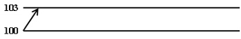
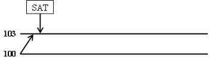
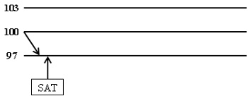
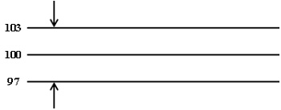
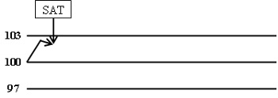
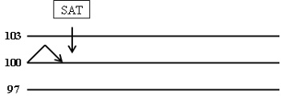
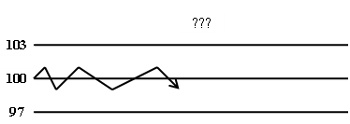

İNSAN HAYAL ETTİĞİ SÜRECE YAŞAR
Bazen yakın arkadaşlarım borsada bir hisse senedi yatırımı yaptıklarında beni arayıp ya da ziyaretime gelip o malum soruyu soruyorlar ve polemik başlıyor:
– Abi bugün Vestel aldım. Nasıl, iyi yapmış mıyım?
– Çok iyi yapmışsın kardeşim. Peki ne zaman satmayı düşünüyorsun?
– Nasıl yani? Abi daha şimdi aldım.
– Onu anladım güzel kardeşim, hayırlı olsun. Ben ne zaman geri satacağını soruyorum?
– ...
Arkadaşımı biraz zorlarsam, aslında hazırlıksız olduğu ortaya çıkar:
– Abi ne bileyim, şöyle % 10 filan artsa satarım.
– Ne kadar zamanda % 10?
– Mmm, mesela 1 ayda filan.
– Ayda % 10, yılda basit % 120, bileşik % 314 yapar be güzelim.
– Yok yav!
– Yaa, buna da beklenti ya da hedef değil, umut derler.
– ...
– Bu getiriyi elde etmek için de bir yatırım uzmanına değil, olsa olsa bir imama ihtiyacın olur; çokça dua etmek lazım çünkü.
– ...
Bu konuşma çok hızlı biter ve ardından oturur mesajları konuşuruz. Konuşmanın temel mesajı, bir yatırımın yapılma anı kadar sona erme anının da planlanmasıdır. Daha doğrusu “yatırımın hedefi”nin saptanmasıdır.
HEDEF
Nasıl insanların hayatlarında bir amaçları ve bazı hayalleri varsa ve bunların yanı sıra hayallerin somutlaşmış hâli olan hedefleri olması gerekiyorsa yatırım cephesinde de bu konuya kafa yormakta yarar vardır.
(Yok, eğer henüz hayatınızın bir amacı yoksa, lütfen bu kitabı derhâl kapatın ve sevgili dostum Ahmet Şerif İzgören’in kitaplarından birini karıştırın. Zira, hayatınızın amacı netleşmemişse borsa-finans bahane... Sizi tanımak bir zevkti.)
Devam ettiğinize göre, ön aşama tamam demektir. Şimdi gelelim işimize, “yatırımın hedefi”ne. Bir yatırıma girerken ondan ne beklediğinizi baştan belirleyin. Ve bu hedef, makul bir hedef olsun. Çünkü o, sizin ondan ne beklediğinizi bilmiyor.
Yatırım hedefinin belirlenmesi iki aşamalıdır. Öncelikle, yatırımın ve performans gözlemlerinin vadesi belirlenmelidir. Vade kısa, orta ve uzun olabilir; ancak yatırım performansının gözlem periyotları da önemlidir. Örneğin paranızdan 1 yıl uzak kalmayı düşünmüş olabilirsiniz; ancak yine de yatırımınızın performansını –en azından ayda bir kez– gözden geçirmek anlamlı olabilir.
Yatırım hedefinin ikinci aşaması ise “performans beklentisi”dir. Bu noktada hiç risk almadan ve zaman ayırmadan paranızı değerlendirebileceğiniz bir yatırım aracının (örneğin güçlü bir bankada 1 aylık mevduat) getirisini öğrenmelisiniz. Mesela bu getiri oranı aylık % 1.5 olsun. Siz, aktif bir portföy yönetimi yapacaksanız ve/veya daha riskli yatırım araçlarına da paranızı yatıracaksanız bu getiriden daha yüksek bir getiri beklemelisiniz yatırımınızdan. Bunu bir katsayı ile açıklarız. İşte beklediğiniz getirinin bu baz getiriden ne kadar daha fazla olacağına karar vermeniz, yani bu katsayıya karar vermek gerçekten zor bir iş, hatta bir nevi sanat.
Ülkeden ülkeye, dönemden döneme, yatırım yapılacak piyasaya ve yatırım aracına, en sonunda da sizin risk algılamanıza bağlı olarak bir katsayı belirlenir. Bu aşamada katsayının “2” olduğunu varsayalım. O hâlde, yatırımınızdan beklentiniz aylık olarak:
Beklenen Getiri = Risksiz Getiri x Risk Katsayısı
Beklenen Getiri = %1.5 x 2 = %3

O hâlde yatırımcı, bankaya para yatırmak yerine, daha fazla risk alarak yönettiği portföyünden “1 ayda % 3 getiri hedeflemelidir”. Hedef, kesin, ölçülebilir, erişilebilir, makul ve zaman sınırlı olmalıdır.
KÂRI REALİZE ETMEK
Belli bir kâr hedefi belirleyen yatırımcı, söz konusu kâr hedefini belirlemekle kalmaz, o kâr hedefini bir satım noktası olarak da kullanır. Yani, hedeflediği getiriyi, hedeflenen gözlem süresi dâhilinde elde ettiği anda da elindeki menkul kıymetleri satarak kârını realize etmelidir.

Sonuçta amaç, hedef belirlemek değil, belirlenen hedefe ulaşıldığında “kârı cebinize koymanızdır”. Cebe konulmadan, hep kâğıt üzerinde takip edilen kâr, daldaki kuştur.
Kıymetleri hedefe ulaştıklarında sattıktan sonra fiyatlar daha da yukarı gidebilir; ancak bu duruma hayıflanmak anlamsızdır, zira finansal piyasalarda en iyi fiyatı bulmak olanaksızdır. Özetle;
• belli bir dönem için,
• makul bir kâr hedefi belirlenmiş
• ve o kâr elde edilmiş ise
“daha ne bekliyorsun kardeşim, sat ve paranı cebine koy!”.
MAKSİMUM KAYIP
Hayat her zaman yukarıdaki gibi yolunda gitmez. Siz 100 YTL’ye aldığınız kıymetlerinizi 103 YTL’ye satmak üzere hesap kitap yaparsınız, beklemeye başlarsınız. Ancak rüzgâr tersine döner ve piyasalar aşağı doğru açılır. Bu durumda, bırakın % 3 kâr etmeyi, yatırımınız doğrudan zarar ile başlar.
Menkul kıymet yatırımlarının değerinin aldıkları fiyatın altında kalması hâlinde, küçük yatırımcıların hemen tümü, üzgün ve kırgın bir tavırla motivasyonlarından uzaklaşırlar. Zararda oldukları için satmayı da düşünmez ve yalnızca aldıkları fiyata gelmesi için dua ederler. Dua son çare olmalıdır.
Bir bankanın yatırım fonlarını yöneten profesyonel fon yöneticilerinin de aynı şekilde davrandığını düşünelim bir an. Yönettikleri portföyün 1 ay içinde % 3 değerleneceğini hedeflemişler, ancak piyasadaki beklenmedik gelişmeler onları haksız çıkarmış ve işler kötüye gidiyor. % 3 kâr elde etmeleri olanaksız gibi, dahası piyasa düşüyor ve düşmeye devam edecek gibi görünüyor: -% 3, -% 5, -% 15...
Ne yaparlar sizce? Durumu kafalarının içinde rasyonalize mi ederler, küçük yatırımcının yaptığı gibi?
• Abi zaten zarardayım, buradan satılmaz.
• Hele biraz bekleyelim, aldığımız fiyata bir gelsin, o zaman satarız.
• Zararı realize etmem arkadaş, artana kadar tutarım.
• Ben zaten uzun vadeli yatırımcıyım, beklerim.
• Ben zaten hisseleri çocuklar için almıştım, düşüş önemli değil!
• ...
Sizce profesyonel bunu yapar mı? Eğer yaparsa parasını yönettiği milyonlarca banka müşterisi, şubelere gelip de fondaki parasının güncel değerini sorduğunda, şubedeki bankacı şöyle mi der:
– Beyefendi, fonu yöneten arkadaşlarımız hisse ve bonoları zararına satmaya kıyamamışlar, dolayısıyla sizin fonda paranız vardı ya...
– Evet?
– Artık yok...
Bence de böyle bir şey olamaz.
Profesyonel portföy yöneticileri böylesi bir risk alamayacaklarına göre, yukarıya doğru bir kâr hedefleri olduğu gibi, aşağıda da bir maksimum kayıp noktaları olmalı. Bu nokta, aynı katsayı ile belirlenebileceği gibi, daha farklı bir katsayı ile de belirlenebilir. Bu örneğimizde, yine % 3 değerini baz alalım. Buna göre fiyatlar, maksimum kayıp noktasına geldiğinde, daha fazla kaybın önüne geçmek için yine satış yapılmalıdır.

O hâlde, yukarı yönlü bir kâr hedefi olan yatırımcının, mutlaka bir de B planı olması gerektiğini, bunun da aşağı tarafta bir maksimum kayıp noktası olduğunu belirledik. Bir yatırımcı için olmazsa olmaz yatırım disiplini, bu iki noktanın saptanması ve erişildiğinde otomatik olarak, duyguları kenara iterek satış yapılmasıdır.
KÂR KAYBINI İZLEME
Yatırımcı, portföy değeri üzerinden iki temel noktayı belirleyip o noktalara erişildiğinde, disiplini elden bırakmadan yapması gerekeni yaparsa en temel alım satım stratejisini uyguluyor demektir. Açıkçası bu disiplin bizim için temel düzeyde yeterlidir.
Bununla birlikte, daha detay ara stratejiler belirlemek de mümkündür. Bir an için önceki örneğimize dönelim. Yukarıda 103 ve aşağıda 97 seviyelerini saptamıştık. Bunlardan ilki kâr hedefi, diğeri ise maksimum kayıp noktasıydı.

Şimdi portföy değerinin önce pozitif açıldığını, ancak hedeflenen 103 seviyesine gelmeden hemen önce, örneğin 102.5 seviyesinden geri döndüğünü varsayalım. Bu durumda kâr hedefi gerçekleşmemiş olacaktır. Öte yandan, bu dönüşün geçici bir dönüş olmadığı ve artık trendin aşağı yönlü olduğu kararına varılırsa, yatırımcı derhâl kâr hedefini revize ederek kâr kaybını izleme stratejisi belirleyebilir.
Kâr kaybını izleme stratejisi bir alt stratejidir ve yalnızca piyasayı yakından takip eden/edebilen aktif yatırımcılar tarafından uygulanmalıdır. Çünkü önceden saptanmış olan noktaya ulaşmadan başlayan bir dönüşün kesin bir dönüş olduğuna, trendin artık değiştiğine ve yeni bir noktaya gün içinde karar verebilmek için “o anda orada olmak” gerekir.
Strateji, temel olarak, fiyatların asıl hedefe ulaşmadan döndüğüne karar verildiğinde, görülen en yüksek noktadan ne kadar daha aşağıya düşene dek satım için beklemeye karar vermek üzerine kuruludur. Buna göre, önceki örnekte kâr hedefi olan 103 seviyesinden önce fiyatlar aşağıyı göstermeye başlarsa, örneğin yükseliş 102.5’te biter ve geri dönerse, ilk aşamada bunun bir dönüş olup olmadığına karar vermek gerekir. Bu zor bir karardır; zira, fiyatlar hafifçe aşağıya salınıp tekrar yukarı yönüne devam edebilir. Pasif yatırımcı, piyasayı anlık olarak takip edemediğinden bu durumdan haberdar dahi olmayacak ve 97-103 bandını bekleyecektir. Aktif yatırımcı ise 102.5’ten dönüşte bir kâr kaybını izleme noktası belirleyecektir. Bu noktanın % 1 puan aşağıda olduğunu varsayalım. Buna göre, kâr kaybını izleme noktasının 102.5 – 1 = 101.5 olduğunu varsayalım. Fiyatlar bu noktaya geldiğinde satış yapılacaktır.

Böylesi bir maksimum kayıp noktası, Dimyat’a pirince giderken evdeki bulgurdan olmayı engellemeyi amaçlar. (Oldukça teknik ve bilimsel bir tanım yaptım değil mi?)
Eğer 103-97 bandını sabit olarak beklerseniz, örneğin en çok 102.5 seviyesini gören ve oradan dönen fiyatlar, belki de 97 seviyesine dek gevşeyecek ve siz 2.5 YTL’lik kâr bir yana, anaparadan da % 3 zarar edebileceksiniz. Bu strateji ile en azından elde ettiğiniz kârın bir bölümünü realize etmiş, cebinize koymuş oluyorsunuz. Daha önce de belirtildiği üzere kâr hedefi ve maksimum kayıp noktası gibi esas stratejilerden olmamakla birlikte, piyasayı yakından takip eden aktif yatırımcıların uygulayabilecekleri iyi bir alt stratejidir.
BAŞABAŞ NOKTASI
Bu alt strateji, kâr kaybını izleme yaklaşımının çok benzeridir. Amaç, kâr hedefine ulaşılmadan gerçekleşen dönüşlerde, kâr edilememiş olmakla birlikte, en azından zarar etmeden pozisyonu kapatmaktır.
Kâr kaybını izleme yaklaşımı ile çok benzer olan bu yaklaşım arasındaki temel fark, yukarı açılıştan sonra kâr hedefine ulaşmadan oluşan dönüşte, alım noktasına dek beklemektir.

Buna göre örneğimizde 100 ile başlamış ve 103-97 bandını belirlemiş olan yatırımcı, fiyatların 102.5’ten dönüşe başlaması durumunda, en çok 100 seviyesine dek bekleyecek ve o seviyede satışa geçerek belki kâr etmeyecek, ama en azından kârlı açılmış bir pozisyonda zarar da etmeden pozisyon kapatacaktır.
Başabaş noktası yaklaşımı da kâr kaybını izleme gibi bir alt stratejidir. Asıl olmazsa olmaz yaklaşımlar kâr hedefi ve maksimum kayıp stratejileridir.
HAREKETSİZLİK (INACTIVITY)
Kendi başına bir strateji olmamakla birlikte her yatırımcının, ama özellikle de al-sat yapan yatırımcının önemle üzerinde durması gereken bir diğer konu da hareketsizliktir.
Yatırım yapılan menkul kıymetin ya da oluşturulan portföyün çok düşük hareket göstermesi başlı başına bir sorundur. Yatırım yaptıktan sonra bu yatırımınızın belli bir dönem içindeki makul bir beklenen değeri olduğunu düşünüyor ve bunun üzerine kurulu alım satım noktaları belirliyorsunuz. Oysa, aldığınız menkul kıymetlerin söz konusu makul uzunluktaki dönemlerde hemen hiç hareket etmediğini düşünün...

Menkul kıymet fiyatlarındaki hareket oynaklığının (volatilite) can sıkıcı biçimde uzun süre düşük gitmesi, sonuçta ortaya alım satım fırsatı çıkmamasını yaratacaktır. O hâlde, uzun süreli hareketsiz (inaktif), alım satım fırsatı vermeyen bir kıymet de aktif bireysel yatırımcı ya da profesyonel para yöneticisi için çok iyi bir tercih olmayacaktır.
O hâlde...
İnsan hayal ettiği sürece yaşar. Ama yatırım cephesinde hayallerin biraz ayağının yere basması gerektiğini ve birer hedefe dönüşmesi zorunluluğunu saptadık. Yatırım hedefi belli standartlar içermeliydi:
• Belli bir dönem içinde,
• makul, ulaşılabilir,
• somut
bir getiri elde etmek. Bu belli bir nokta olmalıdır. Bu saptanan nokta kâr hedefi olarak tanımlandı. Eğer işler kötüye giderse, fiyatlar aşağıya doğru açılırsa, bu kez de en kötü noktası olarak maksimum kayıp noktası tanımlandı. Bu iki temel nokta dışında ise, yukarı açılış olup da kâr hedefine ulaşmadan dönüş gerçekleşmesi durumunda kâr kaybını izleme ve başabaş noktaları, kârın en azından bir kısmını realize etmek ya da zarar etmemek üzerine kurulu alt stratejiler olarak karşımıza çıktılar.
Aktif ya da pasif tüm yatırımcıların ilk iki temel stratejiyi uygulamalarını önerdik. Bu arada, aktif yatırıcıların dilerlerse diğer iki alt stratejiyi de uygulayabileceklerini belirtmiştik.
Yine her iki grup yatırımcı için son tespitimiz de, eğer yatırım yapılan kıymetler, makul dönemlerde dahi çok düşük fiyat hareketliliğine (volatilite) sahipseler, alım satım fırsatı vermeyeceklerinden tercih edilmemeleri olacaktır.